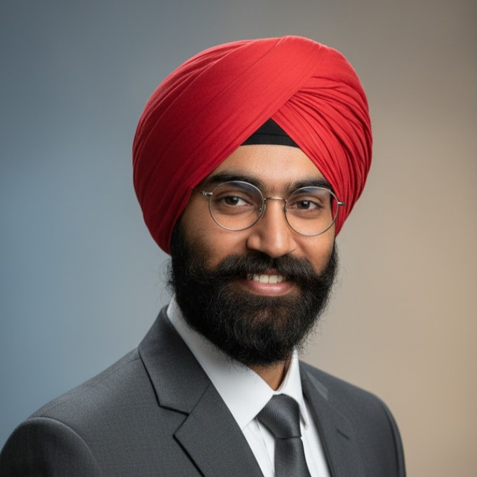
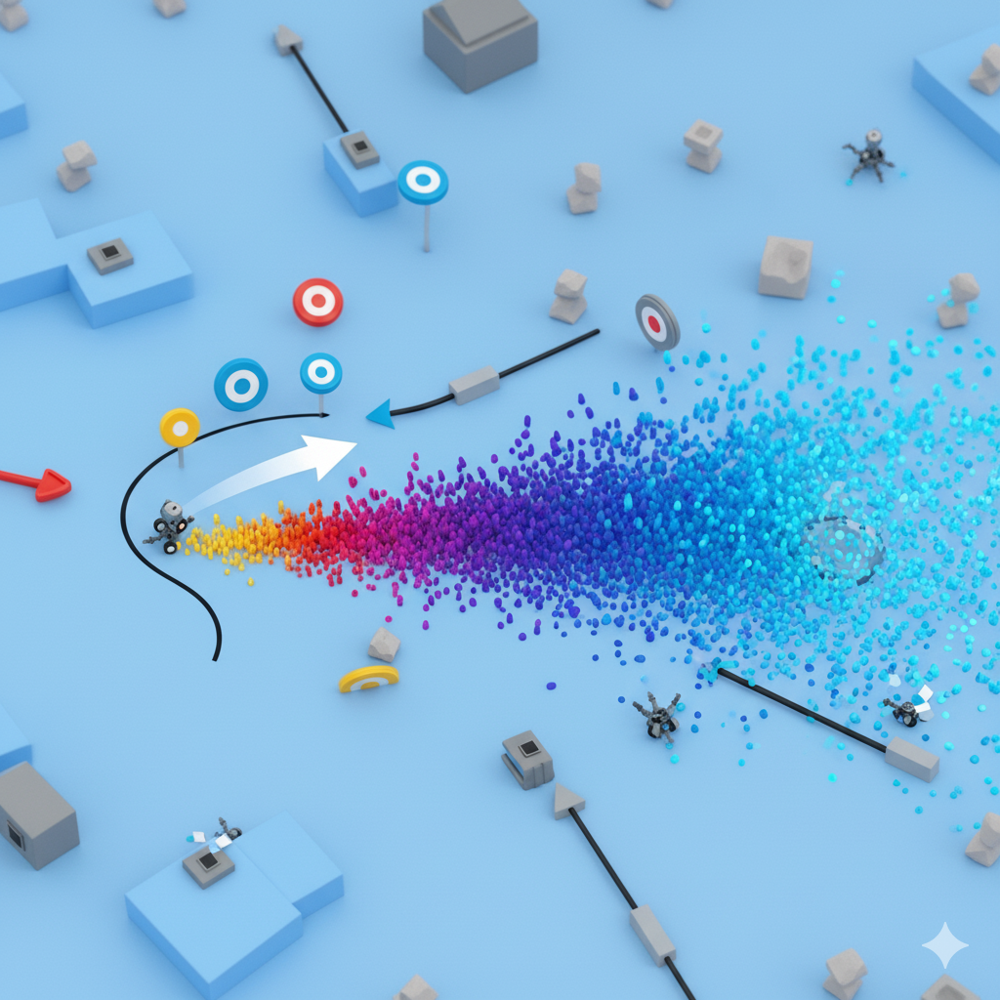
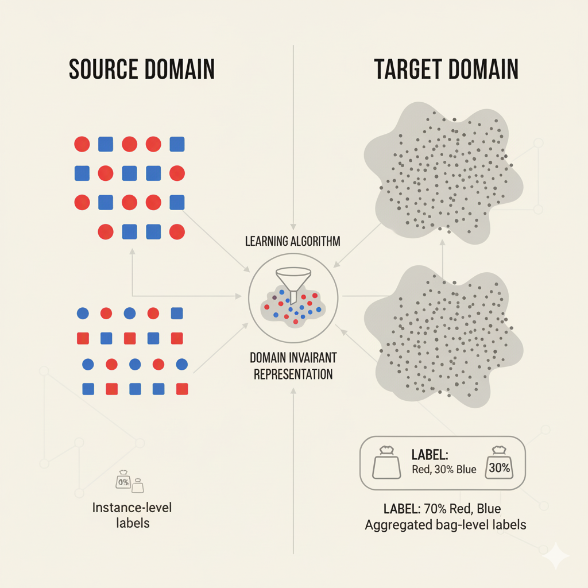
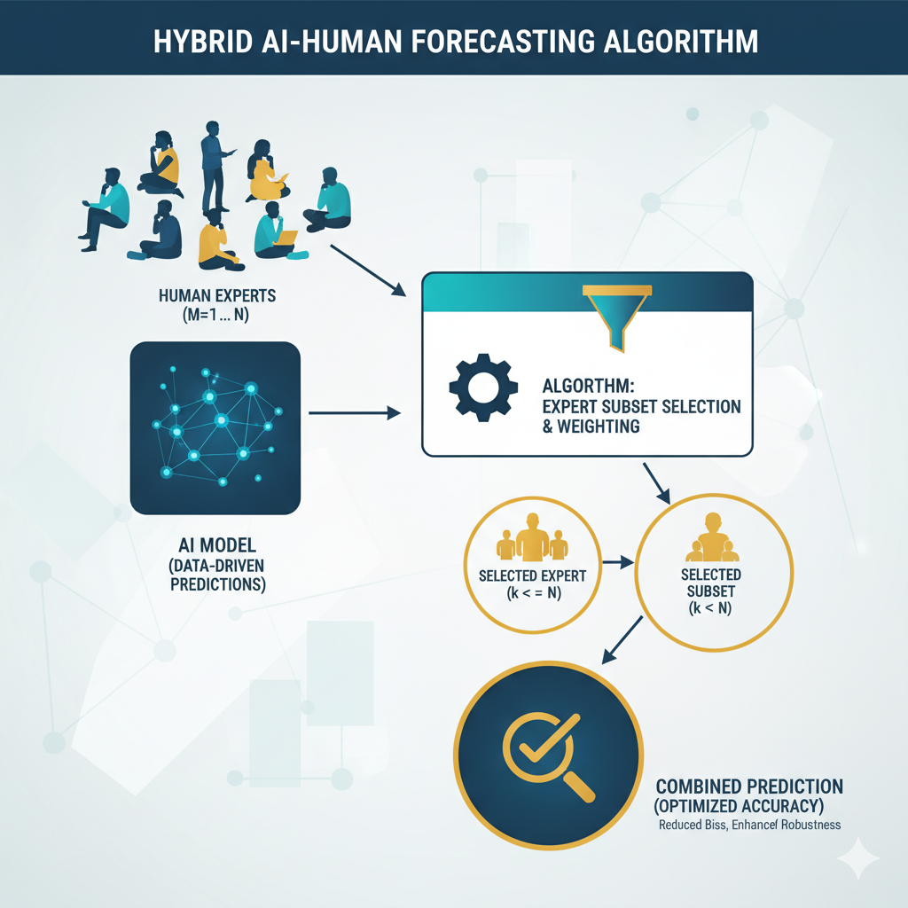
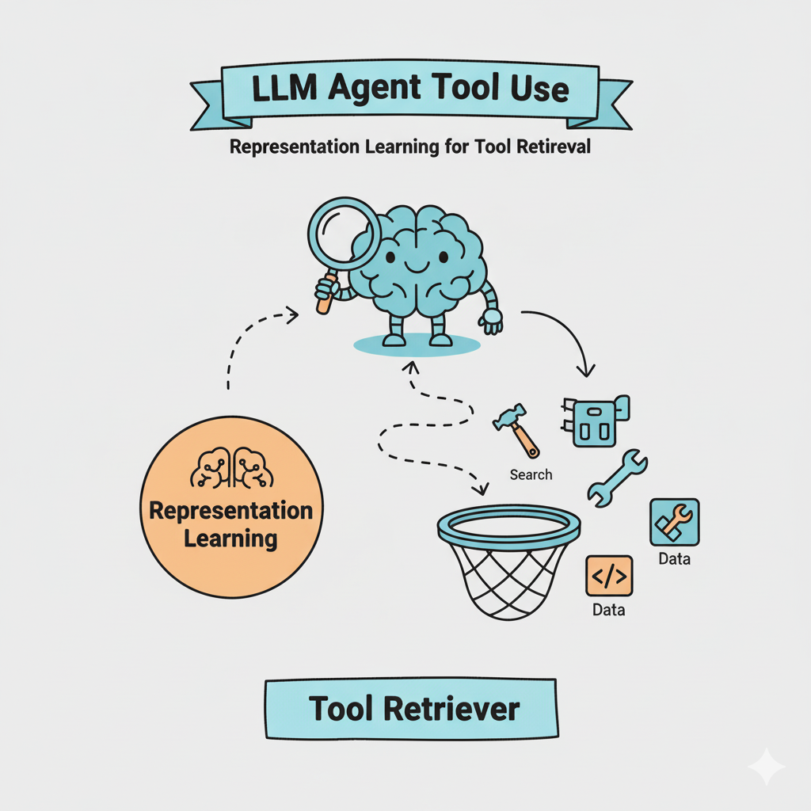
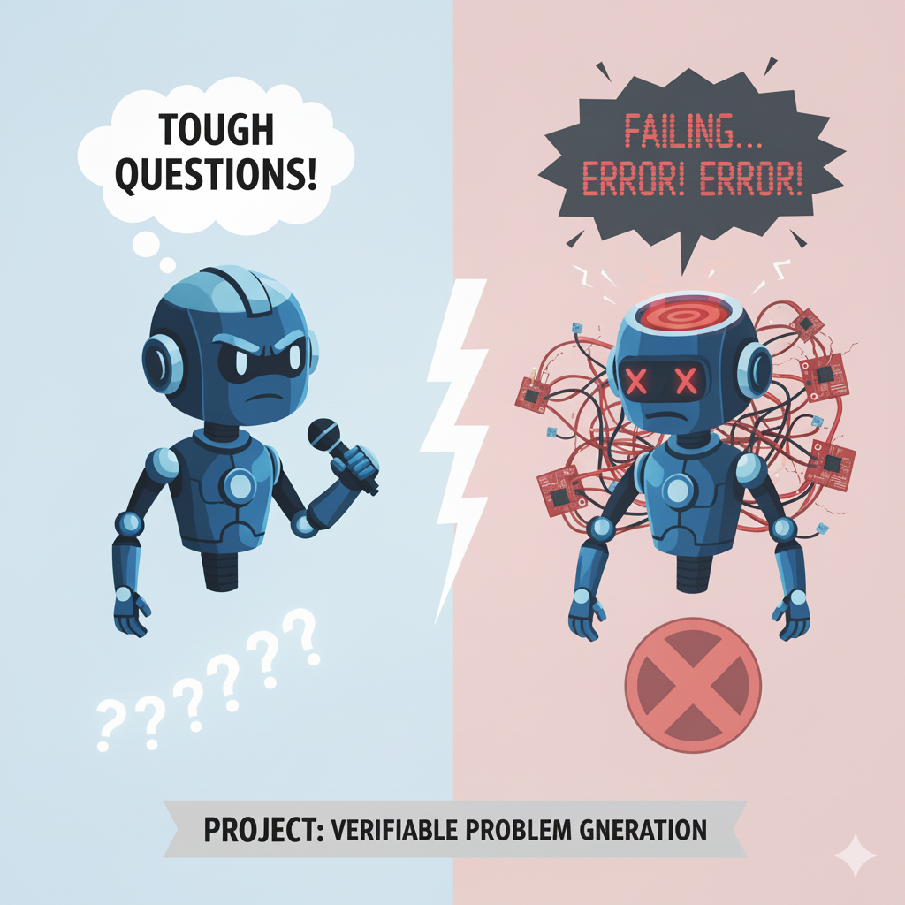
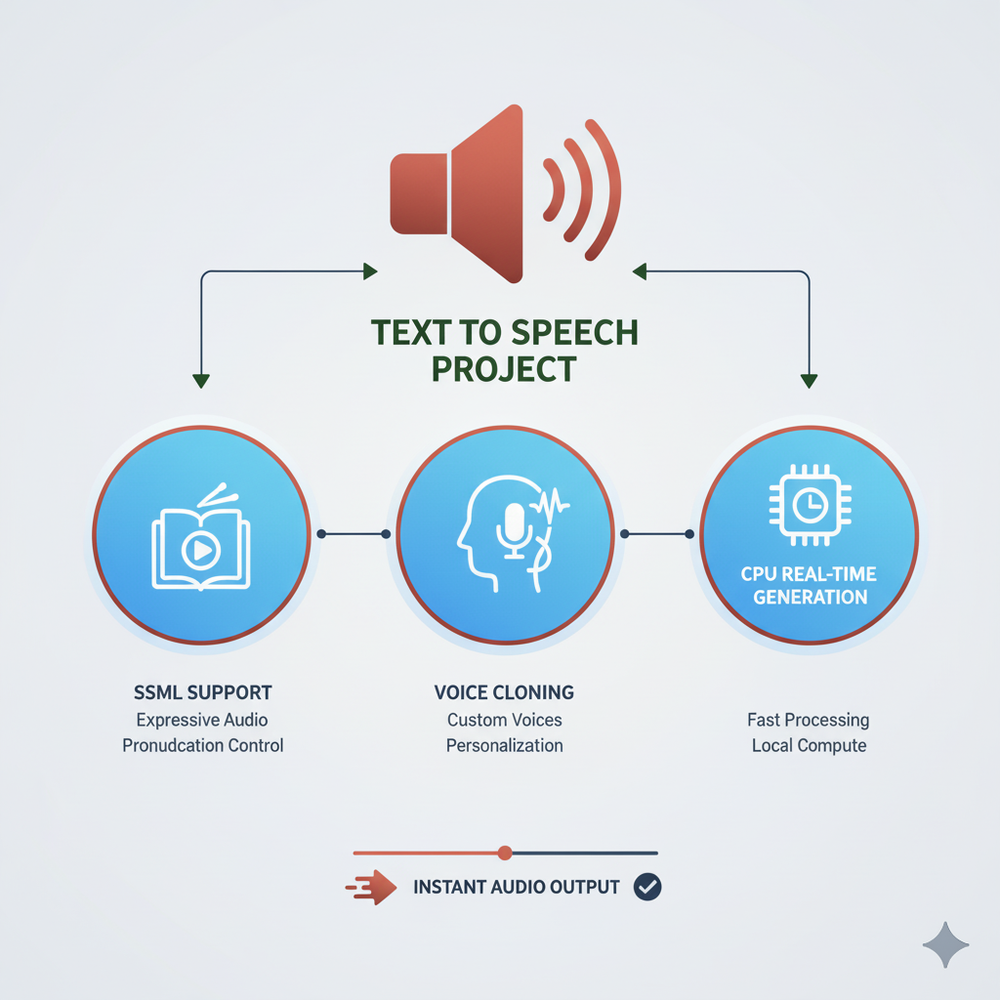

|  |
Sagalpreet Singh I am a Pre-Doctoral Researcher at Google DeepMind in the Agents team, advised by Dr. Rishi Saket and Dr. Aravindan Raghuveer. Previously, I worked as a Member of Technical Staff at Oracle (AI Services) focusing on speech generation. Before that, I completed my B.Tech. in Computer Science and Engineering from IIT Ropar (2019-2023) with a concentration in Artificial Intelligence. My research goal is to develop fundamental algorithms that enable agents to generalize and adapt continually. I am interested in building systems that don't just memorize trajectories but achieve robust generalization to unseen physics or scenarios. My work anchors in Reinforcement Learning while actively leveraging insights from optimization and learning theory to overcome methodological bottlenecks in dynamic and data-scarce environments. |
{kind=link}
News |
|
Published Research |
|

|
Dense and Diverse Goal Coverage in Multi Goal Reinforcement Learning
Sagalpreet Singh, Rishi Saket, Aravindan Raghuveer Google DeepMind Booth @ NeurIPS, 2025 Under Submission arXiv / demo Addressed entropy/mode collapse in RL policies by formulating a regularized optimization objective. We utilized a Frank-Wolfe based algorithm to maximize the density and dispersion of marginal state distributions, providing provable performance guarantees and preventing the agent from learning only a subset of goals. |
|

|
Learning from Label Proportions and Covariate-shifted Instances
Sagalpreet Singh, Navodita Sharma, Shreyas Havaldar, Rishi Saket, Aravindan Raghuveer Uncertainty in Artificial Intelligence (UAI), 2025 code / paper Developed a novel loss function for domain adaptation where the target domain only offers weakly supervised data (aggregate labels). We proved theoretical guarantees bounding the generalization error, enabling efficient learning of domain-invariant representations. |
|

|
On Subset Selection of Multiple Humans to Improve Human-AI Team Accuracy
Sagalpreet Singh, Shweta Jain, Shashi Shekhar Jha Autonomous Agents and Multiagent Systems (AAMAS), 2023 (Oral Presentation) code / paper Designed a greedy strategy for optimal subset selection to combine human experts with AI models. We formulated the lower bound maximization as a submodular problem, achieving superior accuracy by identifying diminishing returns in human inputs. |
Unpublished Research Contributions |
|

|
Retrieval for Tool Aware Planning
Google DeepMind (Ongoing) Developing a tool retrieval agent capable of efficiently fetching tools from a large library to solve tasks. This project explores giving agents external memory that can be updated without drastic model weight updates, inspired by Hierarchical RL. |
|

|
Verifiable Problem Discovery & Unsaturating Benchmarks
Google DeepMind Investigated autonomous generation of verifiable problems in Math and CS domains using rejection sampling and RL with an aim of recursive self improvement. The generated curricula are used to improve Gemini model performance post-training. |
Software & Applied AI Projects |
|

|
Natural Text-to-Speech System
Oracle (OCI AI Services - Speech) blog Built Oracle's flagship natural TTS system, enabling real-time generation on CPU and voice cloning with 5-second reference audio. Implemented SSML tag support for fine-grained control over prosody and pitch. |

|
SAMPAN Android App
IIT Ropar play Store / news coverage / video / blog Co-developed an app for Anganwadi workers to record and analyze child malnourishment data. Recognized with the Best B.Tech Project Award at IIT Ropar. |
Miscellanea |
🏆 Awards |
|
🛠️ Skills |
|
🤝 Service |
|
|
Template from Jon Barron. |